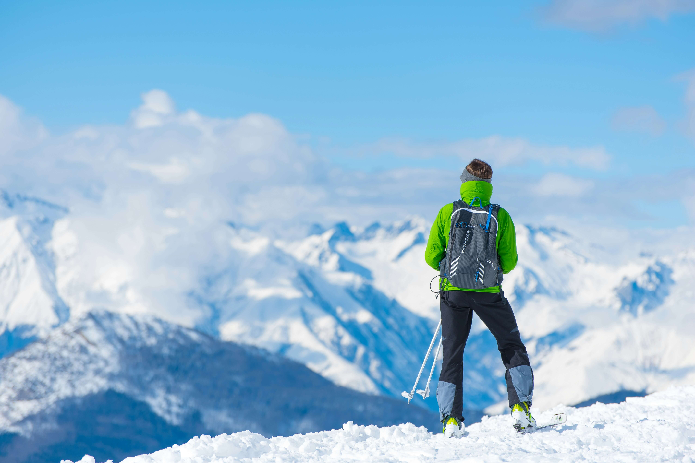

Dzięki Szwagier Team nie musisz martwić się o sprzęt! W ofercie mają bogaty wybór nart, desek snowboardowych i skitourów renomowanych firm - dla dzieci i dorosłych! Znajdziesz tam również akcesoria: kijki, kaski, ochraniacze i gogle.
Największą satysfakcją Szwagier Team jest zadowolenie klienta. Stale obserwują rynek narciarski, aby podnosić jakość usług. Prace wykonują zarówno ręcznie, jak i z użyciem nowoczesnych maszyn.
Stale inwestują w nowy sprzęt oraz urządzenia do serwisowania. Szwagier Team pracuje na maszynach firm Winstersteiger i Reichmann - liderów branży, co zapewnia najwyższą jakość.
Ziener to niemiecka marka z ponad 70-letnią tradycją, specjalizująca się w produkcji rękawic i odzieży sportowej, głównie do sportów zimowych. Założona w 1946 roku, zdobyła renomę dzięki wysokiej jakości i funkcjonalności swoich produktów, łącząc innowacje z tradycyjnym rzemiosłem.
Marka jest szczególnie znana z rękawic narciarskich, które łączą:
- wodoodporne materiały i oddychające tkaniny,
- wzmocnienia palców,
- nowoczesne ocieplenie.
Dzięki dbałości o najmniejsze detale i ciągłemu rozwojowi, Ziener zyskał zaufanie zarówno amatorów, jak i profesjonalnych sportowców.
Produkty marki zapewniają doskonałą ochronę, wygodę oraz trwałość dla narciarzy, snowboardzistów i miłośników zimowych aktywności.
Fischer to renomowana austriacka firma, założona w 1924 roku przez Josefa Fischera Seniora. W początkowych latach działalności firma skupiała się na produkcji nart, a z czasem poszerzyła ofertę.
Z biegiem lat Fischer wprowadził do sprzedaży:
- narty biegowe,
- narty zjazdowe,
- narty do skoków narciarskich,
- wiązania i buty narciarskie,
- akcesoria hokejowe.
Firma nadal jest rodzinnym przedsiębiorstwem i od 1988 roku produkuje sprzęt w fabryce w Mukaczewie, na Ukrainie.
W 1984 roku Fischer zrewolucjonizował branżę, wprowadzając innowacyjne narty cross country, które były najlżejszymi nartami na świecie. Dzięki zastosowaniu technologii "the vacuum method", firma stworzyła narty z jednorodnego materiału, co stanowiło przełom w produkcji.